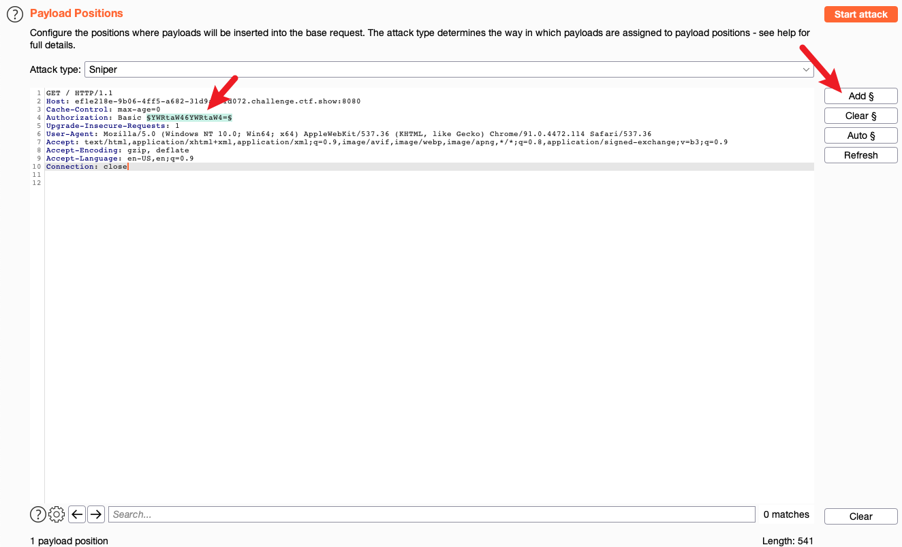

web21
做题
首先先打开浏览器发送一次 HTTP 认证请求并抓包，将请求发送给 Intruder，并将此处添加为 payload

进入payloads标签页，将 Payload type 修改为 Custom iterator，在 Position 1 处填入 admin: ，在Position 2 处点击Add from list… 并选择 Passwords
然后在 Payload Processing 中加入 Base64 Encode

注意：要记得把 Payload Encoding 中的 URL-encode 给去除掉，否则会出现把=给编码的情况。我们可以看上面，=号是没有被编码的，编码将会导致传到服务器后无法进行base64 decode。
设置完毕点击 Start Attack，喝杯 Jvav
然后我重复扫了两次，发现扫不出来。。。。然后查了一下其他同学的writeup发现密码是123456
然后我翻了翻burpsuite的passwords，他竟然没有123456？？？？？？？
原来是题目里面就有一个密码字典。。大意了，赶紧点开下载
然后在 Filter 里面隐藏400请求结果，等待200结果出现即可拿到flag

web22
做题
使用 OneForAll 扫描，命令为 python3 [oneforall.py](http://oneforall.py/) --target ctf.show run
排除上述 challenges 的结果后，最终可以在 vip.ctf.show 的title中看到flag
web23
做题
没思路
虽然但是，我们可以将爆破转换到本地来进行，反正有代码了，节省了上下行时间，改造一下？
1 |
|
光看条件肯定是做不出的，最后跑一遍php就可以出了，肯定有很多答案，1000以内存在一个422的答案能拿到flag。
web24
知识点
- mt_rand 的伪随机数
做题
参考资料：https://blog.csdn.net/crisprx/article/details/104306971
将代码复制下来，并将mt_rand 赋值给一个变量，断点调试观察到，无论刷新几次，该值都不会变化，实际上该值仅与 mt_rand() 被调用的次数有关，我们把断点调试拿到的这个值 1155388967 作为参数 r 拿到flag。

web25
PHP Version: 7.3.11
代码
1 |
|
做题
首先输入r=0获取其第一个mt_rand的值的相反数，比如我们此处获得 -769757407 ，然后将r的值设为769757407，返回空白页即进入下一步。

可以考虑从随机数反推种子，参考资料https://blog.csdn.net/weixin_30271335/article/details/95240888
我们可以利用 php-mt-seed 来反推。执行下面命令，可以得到以下结果（由于ctfshow超时了，导致重新分配了一个种子）
1 | php-mt-seed 227011223 |
由题目，我们的版本为7.3.11，可以看一下Found5和Found6，我们再来简单写一下php试试结果
1 | mt_srand(725894259); |
很幸运，第一个就是正确的，我们成功拿到flag。
web26
做题
这一题，很显然让我们爆破数据库的密码。有了上一次的经验，这次爆破他没给字典我也用他的字典了 -.-

填写好example的信息，我们应该选择爆破的是数据库的密码，那就给密码加上payload，其他按照示例填写，并导入字典文件。


最后查看 Length 不同的一项，7758521 为密码，拿到flag。
web27
做题
我们可以从网站底部获取一份录取名单，内容如下

并且我们可以进入学生学籍信息查询系统，只需要爆破姓名和身份证号码。

我们以第一个为例。由于身份证这几位由年、月、日组成，实际上我们也不用从0爆破到99999999，只需要按照规律设置好就可以。比如说，我们可以将 Payload type 设置为 Dates，同时将格式 format 设置为 yyyyMMdd ，并将日期设置为从1995到2005。当然如果你有条件，你也可以在本地计算好符合校验码的身份证再提交，我这里就不折腾了，如下图

然后我就将第一个从65年查到了05年，终于找到了他的生日 19900201 ，并且在弹窗中找到了他的学号和密码。


web28
做题
我原本以为他是按照 0/1/2/3.txt 这样的顺序迭代下去的，然后发现它延长了 N 倍而且死循环了，我还以为等就好了，等了小几分钟发现原来是卡bug了（
看 Hint，发现原来是爆破前面两个目录，也不难理解 -.- 把 2.txt 去掉以后就是403错误页面，一般来说403错误就证明了存在这个目录，我们只需要爆破路径 {0-100}/{0-100} 即可，最终获得路径 72/20